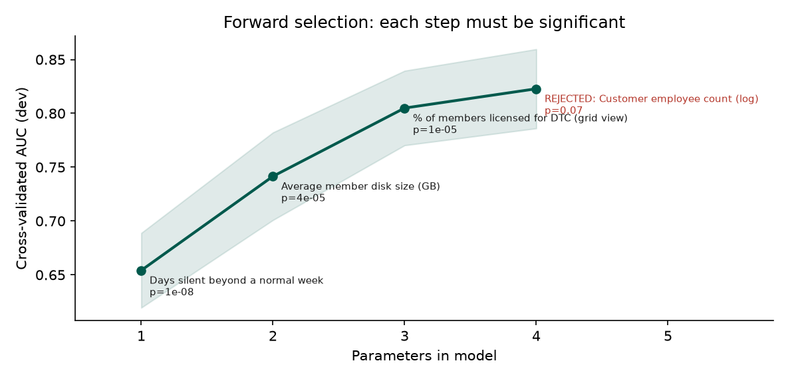
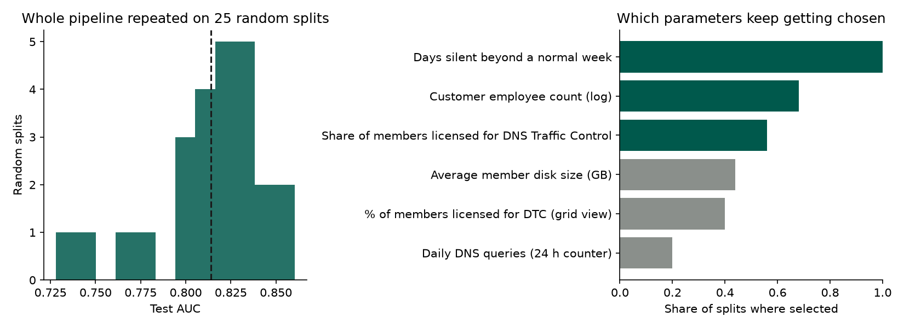

Bottom line: - Three parameters, each statistically independent, predict which NIOS customers churn 3 months ahead with AUC 0.79–0.82 on customers the model never saw. - Every other parameter, out of 772 candidates, either failed significance or added nothing once these three were known. - The three signals: 1. the grid goes silent; 2. it doesn't use DNS Traffic Control; 3. the customer is a smaller company.
All numbers come from reports/v2/results.json, produced by python -m churn2.model.
Anand's email (15 Oct 2026) breaks down the 1,108 churned accounts:
| Accounts | |
|---|---|
| Matched to HEKA through serial numbers used by only that account | 488 |
| Matched only through serial numbers shared with other accounts (excluded as uncertain) | 57 |
| No HEKA activity at all (no serials on record, or serials never seen in HEKA) | 563 |
The 1,051 figure is 1,108 − 57, every account that isn't ambiguous. Only 488 of them have any telemetry, so only those 488 can teach a telemetry model anything. All 488 are used.
| Group | Source | Grids | Accounts |
|---|---|---|---|
| Churned | Anand's serial-matched HEKA pull; churn date from the FY25–FY26 churn list | 316 | 284 |
| Retained (verified) | Fleet grids whose Salesforce account is Active in Customer Lifecycle, not on the churn list | 968 | 797 |
| Set aside | 63 churned grids (49 accounts) that Customer Lifecycle still calls Active, probably moved to other Infoblox products | 63 | 49 |
How "retained" was verified, and why not from telemetry: - The grid → account link comes from the HEKA feature usage / member role extract. - Active status comes from Customer Lifecycle.
Defining "active" from telemetry (e.g. "still reporting") would have made silence predict the label by construction, so labels come from commercial status only.
Not scorable: 194 churned grids and 972 fleet grids had no telemetry covering the 2 months before their scoring date. That's mostly because Anand's pull covers each customer's last reporting year, which for many ended long before churn.
Only data from on or before the scoring date is read. - Candidates: 772 parameters per grid: - every numeric HEKA grid field; - every member field summarised per grid; - 8-week trends; - silence; - upgrade history; - firmographics. - Split: by customer, 80% development and 20% locked test. The test set was used once. All grids of a customer stay on the same side.
| Step | Method | Parameters left |
|---|---|---|
| Candidates | 772 | |
| Testable | ≥ 80% coverage in both groups, not near-constant | 242 |
| Significant | Mann-Whitney U, Benjamini-Hochberg FDR q < 0.01, effect |AUC − 0.5| ≥ 0.05 | |
| Stable over time | dropped if its value drifts with calendar date among churners (p < 0.01, |ρ| ≥ 0.15) | 13 |
| Independent | Spearman |ρ| ≥ 0.7 clusters → keep the strongest of each | 9 |
| Each adds significant accuracy | forward selection, logistic regression, 5×5 repeated cross-validation; enter only if the AUC gain has p < 0.01 (Nadeau-Bengio corrected t-test) | 3 |
The pipeline then compared logistic regression, random forest and gradient boosting. The simplest model is kept unless another is significantly better; none was (p = 0.28–0.91).
"Over and over": the entire pipeline (split, screening, selection, model choice, test) was repeated on 25 different random splits.
Each of these made a model look better than it really was:
| Leak | How it showed up | Fix |
|---|---|---|
| Era drift. Churners are measured 2023–26, retained grids in 2026. | "enabled features per member", HTTP certificates and tenure separated the groups partly by date | era-stability test (step 3); 3 parameters removed |
| Weekday effect. Churn dates fall on the 1st of a month. | "days since last report" (0–6 for any weekly reporter) leaked the weekday | replaced by days silent beyond a normal week |
| Data coverage. "Newer NIOS releases available" is dated by first appearance in our telemetry | boosted model hit test AUC 0.95 on it | removed both release-age parameters |
| Who's in the account map. Verified retained grids carry 3.7M daily queries vs 0.7M for the rest of the fleet | query volume looked more predictive than it is | the result was re-tested against the unmapped fleet (see §6) |
Same-day agreement check: when a grid appears in both sources on the same day, the parameters match. - Grid fields: 100% agreement. - Per-member fields: 167 of 176 match exactly, and the other 9 match 97% of the time (226 grid-days).
| Parameter | Odds ratio per SD | p | VIF |
|---|---|---|---|
| Days silent beyond a normal week | 2.11 (1.83–2.43) | < 0.001 | 1.01 |
| Average member disk size | 1.16 (0.98–1.37) | 0.09 | 1.02 |
| % of members licensed for DNS Traffic Control | 0.53 (0.44–0.64) | < 0.001 | 1.03 |
The primary split happened to pick disk size, which is weak (p = 0.09, chosen in only 44% of splits). The parameters chosen in at least half of the 25 repeated runs are: - silence (100%); - DTC licensing (about 96%, appearing in two near-identical forms); - employee count (68%).
Formula, where z is the parameter after the signed-log transform and standardisation
(churn2/model.py: coef_table):
logit P(churn in 3 months) = −1.356 + 0.690·zsilence − 0.570·zDTC − 0.568·zemployees
| Parameter | Definition | Odds ratio per SD (95% CI) | p | VIF | Churned | Retained |
|---|---|---|---|---|---|---|
| Silence | days without a HEKA report beyond a normal 7-day cycle | 1.99 (1.76–2.26) | < 0.001 | 1.03 | 35% silent > 2 weeks | 9% |
| DTC adoption | share of the grid's members licensed for DNS Traffic Control | 0.57 (0.47–0.68) | < 0.001 | 1.03 | 14% have any | 38% |
| Company size | log of the account's employee count | 0.57 (0.49–0.66) | < 0.001 | 1.00 | median 1,068 | 2,529 |
Reading the odds ratios: - Silence: each extra standard deviation of silence about doubles the odds of churn. - DTC adoption and company size: each standard deviation more of either cuts the odds by about 43%.
Independence: VIF is about 1.0 for all three, so they are effectively uncorrelated.
| Measure | Value |
|---|---|
| ROC-AUC | 0.792 (95% CI 0.723–0.854, bootstrapped by account) |
| Label-permutation test | p = 0.001 |
| Recall: churners caught | 77.8% (49 of 63) |
| Precision: flags that churned | 43.4% (base rate in the test set 24.5%) |
| Specificity / balanced accuracy | 67.0% / 72.4% |
| Account level (flag if any grid is flagged) | AUC 0.792 · recall 80.7% · precision 46.0% |
| Precision at a real-world churn rate of 5% / 10% / 20% | 11% / 21% / 37% |
| Mean test AUC | 95% range | |
|---|---|---|
| Pipeline (as chosen per split) | 0.814 | 0.737–0.859 |
| Consensus model | 0.822 | 0.757–0.864 |
| Gradient boosting on all 13 screened parameters | 0.835 | not significantly better (p = 0.28) |
Logistic regression won all 25 splits under the parsimony rule.
| Variant | Test AUC | Parameters chosen |
|---|---|---|
| Only churners scored from Jul 2025 (same era as retained) | 0.778 | DTC, silence, employees |
| Telemetry only (no firmographics) | 0.792 | silence, disk size, DTC |
| Ambiguous churners included | 0.750 | RPZ, silence, queries |
| Retained = unmapped fleet (unverified, telemetry only) | 0.922 | upgrade recency, disk size, DTC, silence, vDiscovery |
| Negative control: labels shuffled (×3) | 0.500 | none; the pipeline finds nothing when there is nothing |
Silence and DTC/RPZ adoption are chosen in every variant.


| Churned | Retained | |
|---|---|---|
| Any DNS Traffic Control licence | 14% | 38% |
| Any RPZ (DNS firewall) licence | 16% | 38% |
DTC and RPZ are interchangeable as signals: one replaces the other in different splits. 3. They are smaller customers, with thinner deployments.
| Churned | Retained | |
|---|---|---|
| Median employees | 1,068 | 2,529 |
| Median daily DNS queries | 3,080 | 2.47M |
| Grids with zero daily queries | 43% | 26% |
Part of the query gap comes from which customers are in the account map (§4), so query volume wasn't kept. 4. Not predictive, despite intuition: - Member, object or traffic trends (8-week changes): none passed significance. - Offline members, HA, GMC, hardware generation: none passed.
Consistent with the earlier finding that customers don't wind down before churning.
| Model | Test AUC | Note |
|---|---|---|
| Taxonomy churn score | 0.52 | catches 1 of 378 |
| v1 gradient boosting (earlier this week) | 0.84 | likely inflated: it used the raw days-since-last-report (weekday leak) and an unverified retained group |
| v2 consensus model | 0.82 | 3 parameters, every one significant and independent, leak-tested |
v2 is about as accurate as v1, but with 3 parameters instead of 171, a verified comparison group, a locked test set, and every known artifact removed. It's the one to trust.
python -m churn2.model). The 25-split stability
check shows whether the chosen parameters still hold.